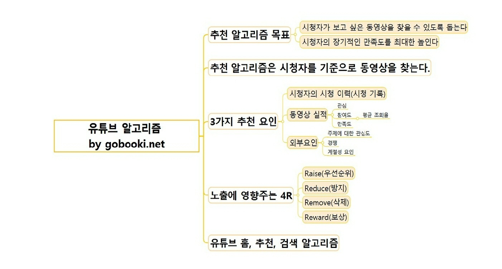
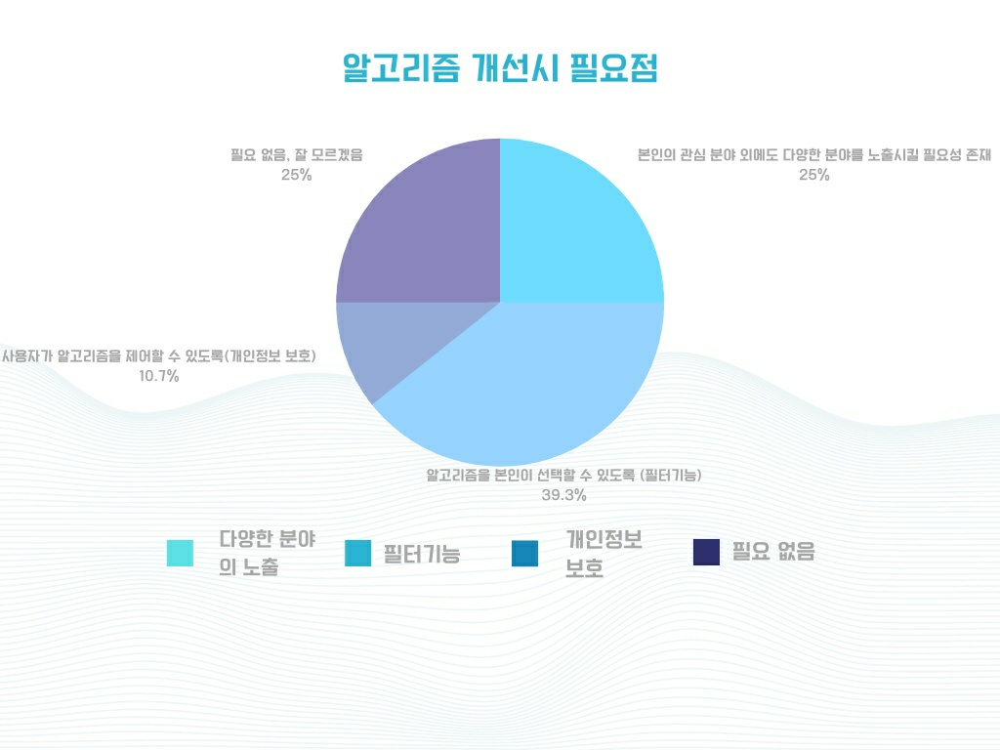

3.알고리즘을 효율적으로 사용하는 방법
(1).유튜브 알고리즘의 원리
1). 플랫폼에서 사용자의 활동에 대한 데이터를 수집한다. 여기에는 시청하는 동영상, 시청 시간, 동영상과 상호 작용하는 방식이 포함된다.
2). 사용자의 활동 데이터에서 관련 특징을 추출한다.제목, 설명, 태그와 같은 비디오에 대한 메타 데이터와 위치 및 장치 유형과 같은 사용자에 대한 정보가 포함된다.
3). 유사도 점수가 가장 높은 동영상에 순위를 매겨 사용자에게 추천하면서 모든 과정을 갈무리한다. 순위는 사용자의 시청 기록이나 추천 동영상의 다양성, 사용자의 관심사 등 동영상의 전반적인 관련성과 같은 추가 요소를 고려해 지정된다.

(2).인스타 알고리즘의 원리
인스타그램 알고리즘은 크게 3가지 요소로 구성된다.
1). 관심사 – 해당 유저가 게시물에 어떤 반응을 보일 지를 예측한 것으로 이 예측을 돕기 위해 유저의 과거 행동 데이터를 사용한다. 비슷한 게시물에 어떤 행동을 보였으며, 유사한 컨텐츠에 어떤 반응을 보였는지 등을 머신러닝을 통해 분석하고 유저 맞춤 관심사를 구성한다.
2). 최신성 – 개인 맞춤과 보편성 사이 간극을 조절하기 위한 요소로, 최근 게시물이 어떻게 게시됐는지 우선순위를 두고 분석한다.
3). 관계 – 게시자와 유저의 관계로, 게시자와 얼마나 친밀도가 높은 가에 따라 피드 내 우선순위가 바뀐다. 이를 측정하는 기준으로 과거 게시물의 댓글, 함께 된 태그, 소요된 시간 등을 확인한다. + 이 3가지 외에도 방문 빈도, 팔로잉, 체류시간 등이 있다.
(3).알고리즘을 효율적으로 사용하는 방법
1).설문조사 결과

2).알고리즘 사용에 대한 전문가의 견해
① 쿠키를 삭제하라(Burn your cookies).
② 웹 히스토리를 삭제하라(Erase your web history).
③ 페이스북에게 당신의 데이터를 기밀로 유지해 줄 것을 요구한다(Tell Facebook to keep your data private).
④ 생년월일에 대한 정보를 숨겨라(It’s your birthday, and you can hide it if you want to).
⑤ 타깃 광고를 해지하고, 스토킹 스니커를 떠나게 하라
(Turn off targeted ads, and tell the stalking sneakers to buzz off).
⑥ 비밀스럽게 방문하라
(Go incognito).
⑦ 더 바람직하게는 익명으로 브라우저를 이용하라
(Or better yet, go anonymous).
⑧ 브라우저를 개인화하지 말라
(Depersonalize your browser).
⑨ 이용자의 필터를 보고 통제하는 구글이나 페이스북에게 말하라
(Tell Google and Facebook to make it easier to see and control your filters).
⑩ 의회에 말하라
(Tell Congress you care).
출처 : Eli Pariser - 「The Filter Bubble : What the Internet is Hiding from You」 (2011)
3).알고리즘 사용에 대한 우리들의 견해
1. 자신이 한쪽으로만 치우친 영상을 봤다고 생각이 들면 관련 검색어를 쳐서 다양한 영상을 보려고 노력한다.
2. 계정을 여러개 만들어서 한가지 항목이여도 다양한 의견을 보려고 노력한다.
3. 쿠키와 시청기록을 삭제해서 정기적으로 알고리즘을 다시 구축한다.
4. 시크릿모드나 로그인을 하지 않고 시청한다.
5. 각 플랫폼을 로그인할때 연결짓지 말고 독립적으로 로그인한다.(예를들어 인스타 회원가입시 네이버로 회원을 가입하지 않는다.)
6. 정보를 받아들일 때 중립적인 태도를 유지하도록 노력한다
7. 알고리즘에 의존하기보다는 자신이 필요한 정보를 직접 검색하여 얻는다.
8. 자신에게 불필요한 정보에는 '관심 없음' 버튼을 누른다.
9. 회원가입을 할 때 어느 범위까지 알고리즘 분석에 이용되는 지 꼼꼼하게 확인한다.